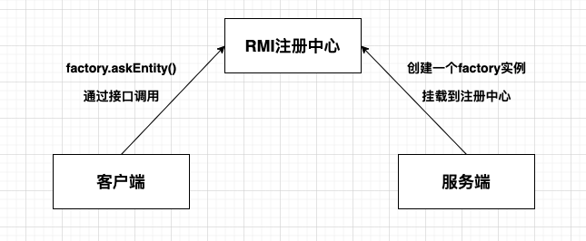
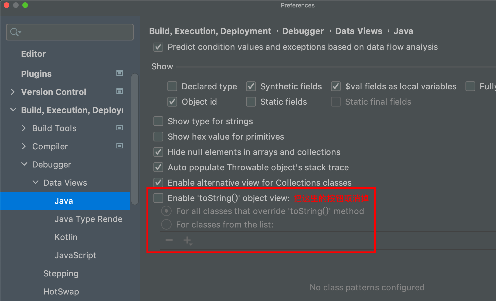

从单体到分布式
初级阶段（本地调用）
在我们学习java初期，我们都会通过创建一个类对象，用该对象调用自身方法，得到需要的内容。整个过程都在本地当前JVM中进行的。这样的程序是最简单，方便，快速的。后面我们又学习了面向接口编程，用接口去规范子类的行为，也就是说调用者不需要知道具体方法的实现，只调用接口即可。
再后来我们又学习了分布式调用这些高端名词，什么Dubbo，什么RPC框架，什么Zookeeper注册中心，说实话我学完还是挺懵逼的，会有种漂浮的感觉，知道它大概是个什么东西后，又说这玩意儿落伍了，让我去看看SpringCloud，Nacos之类的玩意儿，说学这个没问题。现在回想起来有种知识断层的感觉，这种感觉从普通java程序进阶为Spring框架时有，从SpringBoot到SpringCloud时也有。废话不多说了 ，我们开始理理思路吧。
import lombok.AllArgsConstructor;
import lombok.Data;
public interface Factory {
public User askEntity();
}
class factoryImpl implements Factory {
@Override
public User askEntity() {
return new User("旺财", 5);
}
}
@Data
@AllArgsConstructor
class User{
String name;
int age;
}
class demo{
public static void main(String[] args) {
Factory factory = new factoryImpl();
System.out.println(factory.askEntity());
}
} 上面这个代码，没啥难度。就是通过Factory实现类，使用类方法返回一个User对象，但这个操作只能我这台机子操作，别人又没源码，简单粗暴的做法，你想用，直接复制粘贴我的源码。但假如有天我发现了一个Bug，只能修改的是我电脑里的代码，发布一个声明，你们知道后，再拷贝一遍，这不是麻烦死了嘛。
那转化一个思路，我只知道这个接口，而具体实现在你的电脑上，并发布注册到网络中，当我调用接口方法执行时，其实是将接口名，方法名，参数名，参数属性打包发给你，然后实际是在你的程序中进行执行，然后将结果返回到我这里。这样大家都找你调用服务，如果有bug，和我们没关系，你在你那修改，我们这边照常调用就好。这是不是就有点儿服务注册与发现的感觉了。那具体这个打包发送信息，就可以用上JAVA基础篇中的IO流啦，通过Socket进行TCP/IP连接，通过二进制流数据进行信息的传递，这里就又涉及到了Java对象的序列化与反序列化。底层实际就是我们基础篇学习的东西，只不过加了亿点儿细节。
那我们就想，我只想简单的调用个远程服务，上来就给我整个Dubbo框架，配置一堆东西，能不能简单点儿？ 给我缓一下，可以！！！下面就引出了 RMI(Remote Method Invocation),简单理解就是Java本身对分布式方法调用就有的实现方法。
中级阶段（JVM远程调用）

有没有感觉这个图很熟悉，我们直接看代码，通过代码可能逻辑能理得更清楚些。
服务端
Entity层：需要传输的对象
@Data
public class User implements Serializable {
// 这里我们实现了Serializable接口和指定serialVersionUID，为了保证序列化与反序列化正常
private static final long serialVersionUID = 6490921832856589236L;
private String name;
private Integer age;
}Service，ServiceImpl层：定义接口，和具体的实现类
// 这里继承Remote接口是关键，并且也需要保证序列化
public interface Factory extends Remote, Serializable {
static final long serialVersionUID = 6490921832856589236L;
/**
* 查找用户
* @param userId
* @return
* @throws RemoteException 这里必须抛出异常
*/
User findUser(String userId) throws RemoteException;
}// 具体的接口实现类
public class FactoryImpl implements Factory {
public FactoryImpl() throws RemoteException {
}
@Override
public User findUser(String userId) throws RemoteException {
// 就是简单的判断Id，决定是否返回对象。
if ("110".equals(userId)) {
User user = new User();
user.setName("金庸");
user.setAge(100);
return user;
}
throw new RemoteException("查无此人");
}
}Main：启动类
public class RmiServer {
public static void main(String[] args) throws RemoteException {
System.out.println("create remote service...");
// 实例化一个userService,这个实例就是未来真正干活的对象
UserService userService1 = new UserServiceImpl();
// 这里其实相当于把userService1实例挂载到某个端口中，也就是服务端: 如果这里port=0，表示内核就会为我们随机一个端口
UserService rmiUserService1 = (UserService) UnicastRemoteObject.exportObject(userService1, 0);
// 将RMI服务注册到1099端口，也就是注册中心
Registry registry = LocateRegistry.createRegistry(1099);
// 绑定此服务，服务名为"UserService": 这里已经很像注册中心了，注册中心有一个端口，服务提供者一个端口
registry.rebind("UserService", rmiUserService1);
}
}客户端
Entity：和服务端一致
@Data
public class User implements Serializable {
private static final long serialVersionUID = 6490921832856589236L;
private String name;
private Integer age;
}Service：和服务端一值
public interface Factory extends Remote {
/**
* 查找用户
*
* @param userId
* @return
* @throws RemoteException
*/
User findUser(String userId) throws RemoteException;
}Main 启动类
public class RmiClient {
public static void main(String args[]) throws RemoteException, NotBoundException {
// 连接到服务器localhost，端口1099，也就是去找注册中心:
Registry registry = LocateRegistry.getRegistry("localhost", 1099);
// 查找名称为"Factory"的服务并强制转型为Factory接口，这里我们发现我们不需要知道服务端的地址，看注册中心有没有该服务，直接调用即可
Factory worldClock = (Factory) registry.lookup("Factory");
// 正常调用接口方法，这里的调用实际上去服务端进行计算的，本地根本没有实现:
User user = worldClock.findUser("110");
// 打印调用结果:
System.out.println(user);
}
} 这里其实就已经可以远程服务调用了。就是调用了几个Java自身的接口，统一一下返回类型。是不是感觉很清晰，简单。你也不用引入啥其他玩意儿。建议读者自己再执行一遍。理一下思路。
现在我写的就一个很简单的Demo，常见的轮训访问，心跳机制啥的都没有。但对于初次接触的人感觉还是很友善的。那这个RMI看着这么简单方便，为啥后面还有个RPC框架呢。从我的理解，最直接的问题：
- RMI只针对JVM间进行服务，如果我们用其他编程语言没法进行使用调用。
- 序列化与反序列化机制。这里牵扯到了网络安全问题。
高级阶段（分布式服务调用）
终于到了RPC框架了，这里我是看到b站：汤姆还在写代码中对grpc讲解 进行学习的。建议去看看原视频，讲的很细节。这里我直接贴代码了，内容还是比较多的。也可以直接下载源码：https://github.com/tomstillcoding/Simple-RPC
代码相当于手撸一个简单的RPC框架，我们简单看一下项目结构


我们会先看客户端，服务端的启动类，然后一步步挖掘
客户端
public class TestClient {
public static void main(String[] args) {
// 获取RpcService，相当于就是连接注册中心
RpcClientProxy proxy = new RpcClientProxy();
// 从注册中心中找需要使用的接口
HelloService helloService = proxy.getService(HelloService.class);
// 构造出请求对象HelloRequest，也就是定义好的请求参数
HelloRequest helloRequest = new HelloRequest("tom");
// rpc调用并返回结果对象HelloResponse
HelloResponse helloResponse = helloService.hello(helloRequest);
// 从HelloResponse中获取msg
String helloMsg = helloResponse.getMsg();
// 打印msg
System.out.println(helloMsg);
}
}初始化注册中心
public class RpcClientProxy implements InvocationHandler {
@SuppressWarnings("unchecked")
// 这里通过反射获取动态代理对象
public <T> T getService(Class<T> clazz) {
return (T) Proxy.newProxyInstance(
clazz.getClassLoader(),
new Class<?>[]{clazz},
this
);
}
// 这里你可以理解为当你调用对象方法时，实际上你拿到的是一个动态代理后的对象进行调用方法，而实际调用的方法信息通过Socket传输给了服务端，然后结果再通过Socket回传，再返回到你本机。可以说很是巧妙
@Override
public Object invoke(Object proxy, Method method, Object[] args) throws Throwable {
// 1、将接口需要调用的方法的各类信息打包成一个请求体，这里使用了Builder模式【codec层】
RpcRequestBody rpcRequestBody = RpcRequestBody.builder()
.interfaceName(method.getDeclaringClass().getName())
.methodName(method.getName())
.paramTypes(method.getParameterTypes())
.parameters(args)
.build();
// 转化为二进制数组，用于IO传输
ByteArrayOutputStream baos = new ByteArrayOutputStream();
ObjectOutputStream oos = new ObjectOutputStream(baos);
oos.writeObject(rpcRequestBody);
byte[] bytes = baos.toByteArray();
// 2、创建RPC协议，将Header、Body的内容设置好（Body中存放调用编码）【protocol层】
RpcRequest rpcRequest = RpcRequest.builder()
.header("version=1")
.body(bytes)
.build();
// 3、发送RpcRequest，获得RpcResponse
RpcClientTransfer rpcClient = new RpcClientTransfer();
RpcResponse rpcResponse = rpcClient.sendRequest(rpcRequest);
// 4、解析RpcResponse，也就是在解析rpc协议【protocol层】
String header = rpcResponse.getHeader();
byte[] body = rpcResponse.getBody();
if ("version=1".equals(header)) {
// 将RpcResponse的body中的返回编码，解码成我们需要的对象Object并返回【codec层】
ByteArrayInputStream bais = new ByteArrayInputStream(body);
ObjectInputStream ois = new ObjectInputStream(bais);
RpcResponseBody rpcResponseBody = (RpcResponseBody) ois.readObject();
return rpcResponseBody.getRetObject();
}
return null;
}
}实际通过Socket发送信息
public class RpcClientTransfer {
public RpcResponse sendRequest(RpcRequest rpcRequest) {
// 通过Socket进行连接
try (Socket socket = new Socket("localhost", 9000)) {
// 发送【transfer层】
ObjectOutputStream objectOutputStream = new ObjectOutputStream(socket.getOutputStream());
ObjectInputStream objectInputStream = new ObjectInputStream(socket.getInputStream());
// 通过Socket发送
objectOutputStream.writeObject(rpcRequest);
// 这里必须刷新，将数据写出
objectOutputStream.flush();
// 获取Socket传回来的请求体
return (RpcResponse) objectInputStream.readObject();
} catch (IOException | ClassNotFoundException e) {
e.printStackTrace();
return null;
}
}
}服务端
启动类
public class TestServer {
public static void main(String[] args) {
// 真正的rpc server，相当于注册中心，这里主要定义了一个线程池 和 一个监听器
RpcServer rpcServer = new RpcServer();
// 负责干活的实例
HelloService helloService = new HelloServiceImpl();
// 向rpc server注册实例
rpcServer.register(helloService);
// 开始监听，每监听到一个请求，就创建一个线程去执行
rpcServer.serve(9000);
}
}RPC的服务端，也可以理解为注册中心
public class RpcServer {
// 线程池
private final ExecutorService threadPool;
// interfaceName -> interfaceImplementation object
private final HashMap<String, Object> registeredService;
// 初始化线程池 和 服务容器
public RpcServer() {
// 线程数
int corePoolSize = 5;
// 最大线程数
int maximumPoolSize = 50;
// 线程存活时间
long keepAliveTime = 60;
// 线程容器
BlockingQueue<Runnable> workingQueue = new ArrayBlockingQueue<>(100);
// 线程工厂
ThreadFactory threadFactory = Executors.defaultThreadFactory();
// 创建线程池
this.threadPool = new ThreadPoolExecutor(corePoolSize, maximumPoolSize, keepAliveTime, TimeUnit.SECONDS, workingQueue, threadFactory);
// 注册服务的容器，没想到就是Map
this.registeredService = new HashMap<String, Object>();
}
// 存储服务
public void register(Object service) {
// 就是将该对象存储到容器中 key为接口名 value为具体服务
registeredService.put(service.getClass().getInterfaces()[0].getName(), service);
}
// 监听服务
public void serve(int port) {
// 这里实际上也是用Socket连接
try (ServerSocket serverSocket = new ServerSocket(port)){
System.out.println("server starting...");
Socket handleSocket;
while ((handleSocket = serverSocket.accept()) != null) {
System.out.println("client connected, ip:" + handleSocket.getInetAddress());
// 如果有请求进来，这里会调用一个线程去执行
threadPool.execute(new RpcServerWorker(handleSocket, registeredService));
}
} catch (IOException e) {
e.printStackTrace();
}
}
}每个请求进入服务端后，记性相应的处理
public class RpcServerWorker implements Runnable{
private Socket socket;
private HashMap<String, Object> registeredService;
public RpcServerWorker(Socket socket, HashMap<String, Object> registeredService) {
this.socket = socket;
this.registeredService = registeredService;
}
@Override
public void run() {
try {
// 从Socket中获取输入流 与 输出流，这里使用的对象流，也就是要序列化操作
ObjectInputStream objectInputStream = new ObjectInputStream(socket.getInputStream());
ObjectOutputStream objectOutputStream = new ObjectOutputStream(socket.getOutputStream());
// 1、Transfer层获取到RpcRequest消息【transfer层】 含有header 和 body
RpcRequest rpcRequest = (RpcRequest) objectInputStream.readObject();
// 2、解析版本号，并判断【protocol层】
if ("version=1".equals(rpcRequest.getHeader())) {
// 3、将rpcRequest中的body部分解码出来变成RpcRequestBody【codec层】
byte[] body = rpcRequest.getBody();
ByteArrayInputStream bais = new ByteArrayInputStream(body);
ObjectInputStream ois = new ObjectInputStream(bais);
// 接口名，方法名，参数，参数类型
RpcRequestBody rpcRequestBody = (RpcRequestBody) ois.readObject();
// 从注册的服务中，找到对应的接口名 这里是用到了反射
Object service = registeredService.get(rpcRequestBody.getInterfaceName());
Method method = service.getClass().getMethod(rpcRequestBody.getMethodName(), rpcRequestBody.getParamTypes());
// 通过反射，获取对象，方法，然后得到结果
Object returnObject = method.invoke(service, rpcRequestBody.getParameters());
// 1、将结果编码成bytes[]即变成了返回编码【codec层】
RpcResponseBody rpcResponseBody = RpcResponseBody.builder()
.retObject(returnObject)
.build();
ByteArrayOutputStream baos = new ByteArrayOutputStream();
ObjectOutputStream oos = new ObjectOutputStream(baos);
oos.writeObject(rpcResponseBody);
byte[] bytes = baos.toByteArray();
// 2、将返回编码作为body，加上header，生成RpcResponse协议【protocol层】
RpcResponse rpcResponse = RpcResponse.builder()
.header("version=1")
.body(bytes)
.build();
// 3、发送【transfer层】
objectOutputStream.writeObject(rpcResponse);
objectOutputStream.flush();
}
} catch (IOException | ClassNotFoundException | NoSuchMethodException | IllegalAccessException | InvocationTargetException e) {
e.printStackTrace();
}
}
} 上面就是整体的一个运行流程，至于里面的实例信息可以直接从github上查看，我主要帮助理一下思路，可以说是不停的debug，这里我遇到了一个比较坑的点：动态代理的invoke方法在debug时候会出现各种莫名奇妙的问题，你直接取消下图的按钮，就可以正常执行了。
总结：
我们可以看到当在我们最后一块儿手写RPC时，真正干活的对象并没有分离为一个服务，而是将它放入了服务端的一个Map中，当请求过来时，对请求进行处理，找到需要执行的接口，从Map中看有没有该接口实例，如果有则进行执行，执行结果再通过Socket进行回传。
这里的案例我是照搬汤姆还在写代码的，从中我知道了可以通过自定义RPC简单协议来通过Socket进行信息交互，真的很酷，这样看其实各个协议离我们并不遥远，我们也可以自己去定义，通过Map来存储各个服务，虽然不知道真实的Zookeeper是怎么实现的，但应该原理是类似的。后面我可能再去看看grpc的实现，应该能发现更多的东西。